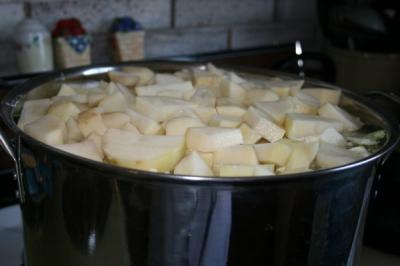

Step 1: Put the unpeeled potatoes in a large pot. Fill the pot with enough cold water to cover the potatoes by at least 2 inches and bring to a simmer over medium-high heat. Reduce the heat to medium, partially cover the pot, and simmer the potatoes until they are completely tender and easily pierced with a skewer, 30 to 35 minutes.
